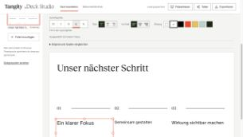

Internal product · Design systems
Tangity Deck Studio · Making presentation standards usable
An editable presentation workflow that brings Tangity’s layout standards into the editor and carries them through to PowerPoint.

Presentation guidelines describe what a deck should look like. The work of applying those rules repeats every time someone imports material, lays out a slide or hands a deck to a colleague.
I initiated and built Deck Studio around a shared slide grid and editable layouts. The editor lets people bring in existing material, align elements to the grid and export native PowerPoint objects. That last decision matters because colleagues need to keep working in the file after handoff.
I also packaged the slide standards into a reusable skill with layout recipes, editable examples and visual checks. The editor and skill apply the same standards in two places where people make slides.

